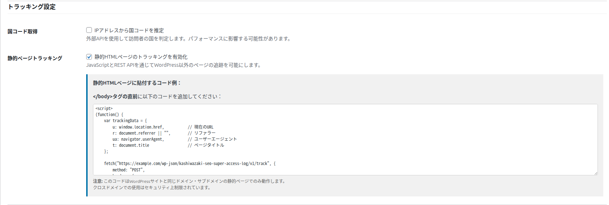

静的ページの計測
WordPress ではない HTML だけのページ（静的ページ）へのアクセスも、コードを貼り付けるだけで同じログに記録できます。
こんなときに使います
- WordPress とは別に、HTML だけで作ったランディングページや特設ページがある
- サブドメイン（例:
lp.example.com）に置いた静的なページのアクセスも、WordPress のログでまとめて見たい
使い方
1
有効にする
「設定」タブの「トラッキング設定」で「静的HTMLページのトラッキングを有効化」をオンにして、保存します。
2
コードをコピーする
保存すると、その下に「静的HTMLページに貼付するコード例：」が表示されます（保存するまでは表示されません）。枠の中のコードを全部コピーします。
3
静的ページに貼る
計測したい HTML ファイルの </body> タグの直前に貼り付けて、アップロードします。
4
記録を確かめる
そのページを開いてから、メインタブの絞り込みで「ソース」を「静的ページ」にすると、記録が表示されます。

記録される内容
| 項目 | 内容 |
|---|---|
| ページ | 開かれたページの URL（一覧の Request Path に URL 全体が表示されます） |
| 参照元・ブラウザ | ページを開いたブラウザが知っている参照元と User-Agent |
| 訪問者 ID・訪問タイプ | WordPress のページと同じしくみで決まります。同じ訪問者なら、WordPress のページと静的ページで同じ訪問者 ID になります（同じドメインのとき）。 |
| ソース | 「静的ページ」（一覧では Static） |
| ボットの判定・国・ブロック | WordPress のページと同じです。ブロックした訪問者の記録は受け付けません。 |
使える範囲と注意点
| 項目 | 内容 |
|---|---|
| 受け付けるページ | WordPress のサイトと同じドメイン（www の有無を含む）と、そのサブドメインのページだけです。ほかのドメインのページにコードを貼っても記録されません。 |
| JavaScript が必要 | コードは訪問者のブラウザで動くので、JavaScript を止めているブラウザや、JavaScript を実行しないボットのアクセスは記録されません。そのため、静的ページのボットの数は少なめに出ます。 |
| ページのタイトル | コードはページのタイトルも送りますが、保存はしません。 |
| 無効にしたとき | 設定をオフにすると、記録を受け付けなくなります。貼ったコードはそのままでも動作に害はありませんが、不要なら外してください。 |
おすすめ
コードは、サイトの URL が入った状態で表示されます。サイトの URL を変えたとき（http から https への変更など）は、表示されたコードをコピーし直して、静的ページに貼り直してください。